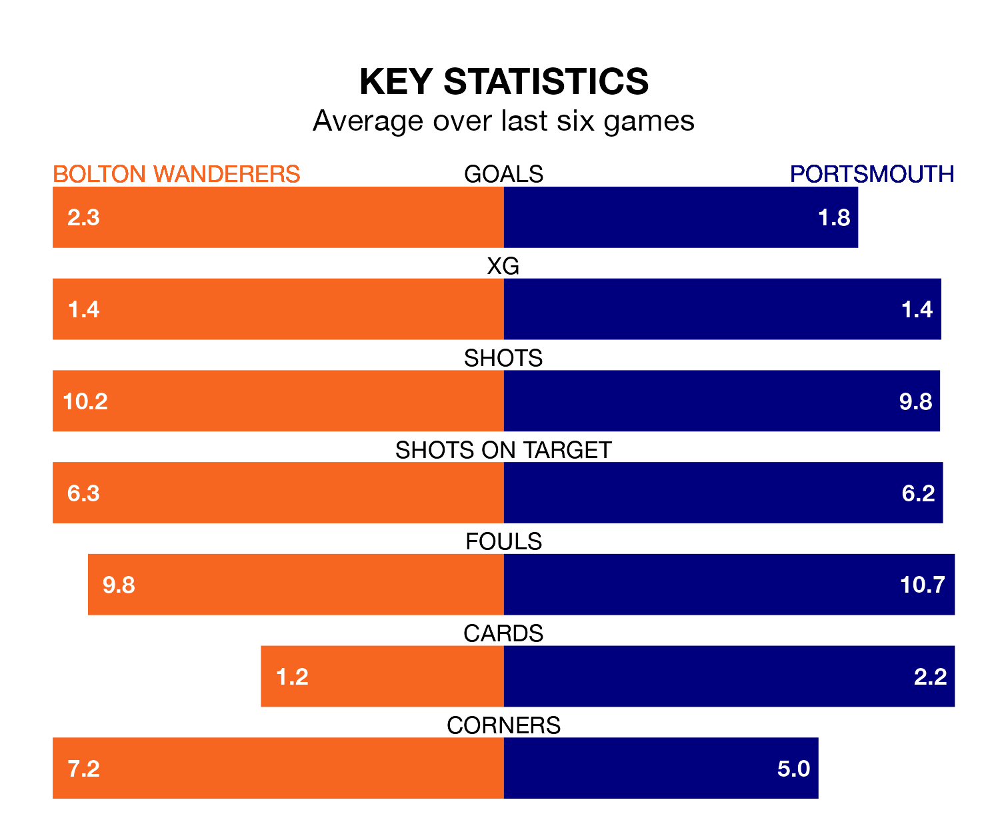

Two of EFL League One's top sides face each other at the University of Bolton Stadium in Saturday's kick-off, when third-placed Bolton Wanderers host table-topping Portsmouth.
Bolton have picked up 24 wins and nine draws from 42 games so far this season, and sit nine points below the visitors going into the 3pm match.
Pompey, meanwhile, have won 26 and drawn 12, picking up 90 points.
With 78 goals in 42 games so far this season, Bolton are the league's highest scorers with 1.9 goals per game. And they are conceding fewer than average, letting in 45 goals at a rate of 1.1 per game.
Portsmouth are also above average scorers, with 1.7 goals per game, compared to a league average of 1.3. They have conceded 0.9 goals per game.
With Will Norris between the sticks, Pompey can rely on one of the league's safest pair of hands. He has kept 18 clean sheets in his 42 appearances this season, and no 'keeper has prevented the opposition scoring more often in EFL League One.
In Wanderers' net, Nathan Baxter has 13 clean sheets in 29 games. He has conceded a goal every 104 minutes, 10% more often than the 115 minutes between goals for Norris.
In the last 10 years, Bolton and Portsmouth have played each other on eight occasions. Bolton won two of them, Portsmouth five, and they drew once.
On average, Bolton scored 0.8 goals and Pompey 1.1 in those matches.
Their last meeting was on December 11, when Portsmouth won 2-0 at home.
The home team are in reasonable form in EFL League One, with three wins and two draws from their last six games.
With four wins and two draws over that period, the visitors' form is better – they have taken 14 points from 18, compared to Bolton's 11.
Bolton's last match was on April 6, a 2-0 win against Bristol Rovers, with Aaron Collins and Aaron Morley getting the goals for Bolton.
Portsmouth beat Shrewsbury Town 3-1 last time out, also on April 6, with Colby Bishop (two) and Cheyenne Dunkley (own goal) on the scoresheet.
Updated: 14:47 (UTC), 09/04/24